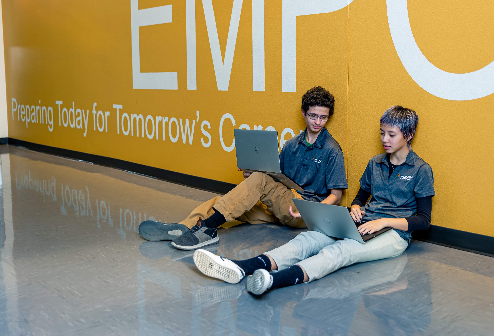

West-Mec Coding is a two-year interactive program that prepares students for a career in software development. It teaches the fundamentals of website development, app building, and writing code.
The program is also a great way to find new contacts and network by gaining real-world experience when traveling to many of the events hosted by FBLA. This helps students get a better understanding of what the field is really like.